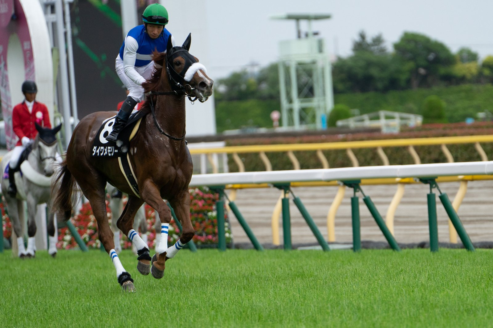

4,6 millones por un hijo de Night Of Thunder: Godolphin manda en la Book One de Tattersalls
Godolphin dominó la jornada inaugural de la Book One de la Tattersalls October Yearling Sale con tres potros de precio alto y dos pujas ganadas a Coolmore, una de ellas el récord de la venta.

El techo llegó con el lote 130. Anthony Stroud, que pujaba por el equipo de Sheikh Mohammed, ganó la puja a Coolmore y cerró la operación en 4.600.000 por un potro de Night Of Thunder y My Astra, una yegua colocada en Grupo I. Nunca se había pagado tanto por un potro macho de un año en esta subasta.
"Era un potro realmente precioso, por Night Of Thunder y de una familia muy buena. Tiene el pedigrí, tiene la planta, tiene potencial de semental, y es un caballo extraordinariamente bonito que viene de una yeguada muy buena. No podríamos estar más contentos", explicó Stroud. También reconoció que la cifra estaba "en la parte alta" de su tasación.
No fue el primer pulso de la jornada entre las dos grandes operaciones. Antes, Godolphin y Coolmore habían sostenido un duelo largo por el lote 87, un hijo de Wootton Bassett de la familia de Lord North, que también acabó del lado de Godolphin.
"Es un caballo extremadamente bonito, sobresaliente, por Wootton Bassett, y ya no quedan tantos por venir de él. Viene de una explotación magnífica que ha criado incontables buenos caballos, y a todo el equipo le gustó", señaló Stroud sobre esa compra.
La tercera adquisición de peso fue el lote 27, un potro de Frankel y Get Ahead, que Stroud se adjudicó por 1,8 millones de guineas. La madre es media hermana de Chaldean. En pista, con Clive Cox como preparador, fue colocada en el Flying Five Stakes, Grupo I del Curragh, y ganó el Cecil Frail Stakes, Listed de Haydock Park.
En esa puja, el último en ceder fue Kia Joorabchian, de Amo Racing.
— Redacción de Galope al Día